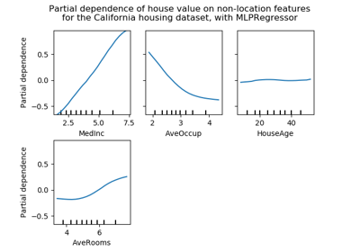

sklearn.neural_network.MLPRegressor¶
-
class
sklearn.neural_network.MLPRegressor(hidden_layer_sizes=(100, ), activation='relu', solver='adam', alpha=0.0001, batch_size='auto', learning_rate='constant', learning_rate_init=0.001, power_t=0.5, max_iter=200, shuffle=True, random_state=None, tol=0.0001, verbose=False, warm_start=False, momentum=0.9, nesterovs_momentum=True, early_stopping=False, validation_fraction=0.1, beta_1=0.9, beta_2=0.999, epsilon=1e-08, n_iter_no_change=10, max_fun=15000)[source]¶ Multi-layer Perceptron regressor.
This model optimizes the squared-loss using LBFGS or stochastic gradient descent.
New in version 0.18.
- Parameters
- hidden_layer_sizestuple, length = n_layers - 2, default (100,)
The ith element represents the number of neurons in the ith hidden layer.
- activation{‘identity’, ‘logistic’, ‘tanh’, ‘relu’}, default ‘relu’
Activation function for the hidden layer.
‘identity’, no-op activation, useful to implement linear bottleneck, returns f(x) = x
‘logistic’, the logistic sigmoid function, returns f(x) = 1 / (1 + exp(-x)).
‘tanh’, the hyperbolic tan function, returns f(x) = tanh(x).
‘relu’, the rectified linear unit function, returns f(x) = max(0, x)
- solver{‘lbfgs’, ‘sgd’, ‘adam’}, default ‘adam’
The solver for weight optimization.
‘lbfgs’ is an optimizer in the family of quasi-Newton methods.
‘sgd’ refers to stochastic gradient descent.
‘adam’ refers to a stochastic gradient-based optimizer proposed by Kingma, Diederik, and Jimmy Ba
Note: The default solver ‘adam’ works pretty well on relatively large datasets (with thousands of training samples or more) in terms of both training time and validation score. For small datasets, however, ‘lbfgs’ can converge faster and perform better.
- alphafloat, optional, default 0.0001
L2 penalty (regularization term) parameter.
- batch_sizeint, optional, default ‘auto’
Size of minibatches for stochastic optimizers. If the solver is ‘lbfgs’, the classifier will not use minibatch. When set to “auto”,
batch_size=min(200, n_samples)- learning_rate{‘constant’, ‘invscaling’, ‘adaptive’}, default ‘constant’
Learning rate schedule for weight updates.
‘constant’ is a constant learning rate given by ‘learning_rate_init’.
‘invscaling’ gradually decreases the learning rate
learning_rate_at each time step ‘t’ using an inverse scaling exponent of ‘power_t’. effective_learning_rate = learning_rate_init / pow(t, power_t)‘adaptive’ keeps the learning rate constant to ‘learning_rate_init’ as long as training loss keeps decreasing. Each time two consecutive epochs fail to decrease training loss by at least tol, or fail to increase validation score by at least tol if ‘early_stopping’ is on, the current learning rate is divided by 5.
Only used when solver=’sgd’.
- learning_rate_initdouble, optional, default 0.001
The initial learning rate used. It controls the step-size in updating the weights. Only used when solver=’sgd’ or ‘adam’.
- power_tdouble, optional, default 0.5
The exponent for inverse scaling learning rate. It is used in updating effective learning rate when the learning_rate is set to ‘invscaling’. Only used when solver=’sgd’.
- max_iterint, optional, default 200
Maximum number of iterations. The solver iterates until convergence (determined by ‘tol’) or this number of iterations. For stochastic solvers (‘sgd’, ‘adam’), note that this determines the number of epochs (how many times each data point will be used), not the number of gradient steps.
- shufflebool, optional, default True
Whether to shuffle samples in each iteration. Only used when solver=’sgd’ or ‘adam’.
- random_stateint, RandomState instance or None, optional, default None
If int, random_state is the seed used by the random number generator; If RandomState instance, random_state is the random number generator; If None, the random number generator is the RandomState instance used by
np.random.- tolfloat, optional, default 1e-4
Tolerance for the optimization. When the loss or score is not improving by at least
tolforn_iter_no_changeconsecutive iterations, unlesslearning_rateis set to ‘adaptive’, convergence is considered to be reached and training stops.- verbosebool, optional, default False
Whether to print progress messages to stdout.
- warm_startbool, optional, default False
When set to True, reuse the solution of the previous call to fit as initialization, otherwise, just erase the previous solution. See the Glossary.
- momentumfloat, default 0.9
Momentum for gradient descent update. Should be between 0 and 1. Only used when solver=’sgd’.
- nesterovs_momentumboolean, default True
Whether to use Nesterov’s momentum. Only used when solver=’sgd’ and momentum > 0.
- early_stoppingbool, default False
Whether to use early stopping to terminate training when validation score is not improving. If set to true, it will automatically set aside 10% of training data as validation and terminate training when validation score is not improving by at least
tolforn_iter_no_changeconsecutive epochs. Only effective when solver=’sgd’ or ‘adam’- validation_fractionfloat, optional, default 0.1
The proportion of training data to set aside as validation set for early stopping. Must be between 0 and 1. Only used if early_stopping is True
- beta_1float, optional, default 0.9
Exponential decay rate for estimates of first moment vector in adam, should be in [0, 1). Only used when solver=’adam’
- beta_2float, optional, default 0.999
Exponential decay rate for estimates of second moment vector in adam, should be in [0, 1). Only used when solver=’adam’
- epsilonfloat, optional, default 1e-8
Value for numerical stability in adam. Only used when solver=’adam’
- n_iter_no_changeint, optional, default 10
Maximum number of epochs to not meet
tolimprovement. Only effective when solver=’sgd’ or ‘adam’New in version 0.20.
- max_funint, optional, default 15000
Only used when solver=’lbfgs’. Maximum number of function calls. The solver iterates until convergence (determined by ‘tol’), number of iterations reaches max_iter, or this number of function calls. Note that number of function calls will be greater than or equal to the number of iterations for the MLPRegressor.
New in version 0.22.
- Attributes
- loss_float
The current loss computed with the loss function.
- coefs_list, length n_layers - 1
The ith element in the list represents the weight matrix corresponding to layer i.
- intercepts_list, length n_layers - 1
The ith element in the list represents the bias vector corresponding to layer i + 1.
- n_iter_int,
The number of iterations the solver has ran.
- n_layers_int
Number of layers.
- n_outputs_int
Number of outputs.
- out_activation_string
Name of the output activation function.
Notes
MLPRegressor trains iteratively since at each time step the partial derivatives of the loss function with respect to the model parameters are computed to update the parameters.
It can also have a regularization term added to the loss function that shrinks model parameters to prevent overfitting.
This implementation works with data represented as dense and sparse numpy arrays of floating point values.
References
- Hinton, Geoffrey E.
“Connectionist learning procedures.” Artificial intelligence 40.1 (1989): 185-234.
- Glorot, Xavier, and Yoshua Bengio. “Understanding the difficulty of
training deep feedforward neural networks.” International Conference on Artificial Intelligence and Statistics. 2010.
- He, Kaiming, et al. “Delving deep into rectifiers: Surpassing human-level
performance on imagenet classification.” arXiv preprint arXiv:1502.01852 (2015).
- Kingma, Diederik, and Jimmy Ba. “Adam: A method for stochastic
optimization.” arXiv preprint arXiv:1412.6980 (2014).
Methods
fit(self, X, y)Fit the model to data matrix X and target(s) y.
get_params(self[, deep])Get parameters for this estimator.
predict(self, X)Predict using the multi-layer perceptron model.
score(self, X, y[, sample_weight])Returns the coefficient of determination R^2 of the prediction.
set_params(self, \*\*params)Set the parameters of this estimator.
-
__init__(self, hidden_layer_sizes=(100, ), activation='relu', solver='adam', alpha=0.0001, batch_size='auto', learning_rate='constant', learning_rate_init=0.001, power_t=0.5, max_iter=200, shuffle=True, random_state=None, tol=0.0001, verbose=False, warm_start=False, momentum=0.9, nesterovs_momentum=True, early_stopping=False, validation_fraction=0.1, beta_1=0.9, beta_2=0.999, epsilon=1e-08, n_iter_no_change=10, max_fun=15000)[source]¶ Initialize self. See help(type(self)) for accurate signature.
-
fit(self, X, y)[source]¶ Fit the model to data matrix X and target(s) y.
- Parameters
- Xarray-like or sparse matrix, shape (n_samples, n_features)
The input data.
- yarray-like, shape (n_samples,) or (n_samples, n_outputs)
The target values (class labels in classification, real numbers in regression).
- Returns
- selfreturns a trained MLP model.
-
get_params(self, deep=True)[source]¶ Get parameters for this estimator.
- Parameters
- deepboolean, optional
If True, will return the parameters for this estimator and contained subobjects that are estimators.
- Returns
- paramsmapping of string to any
Parameter names mapped to their values.
-
property
partial_fit¶ Update the model with a single iteration over the given data.
- Parameters
- X{array-like, sparse matrix}, shape (n_samples, n_features)
The input data.
- yarray-like, shape (n_samples,)
The target values.
- Returns
- selfreturns a trained MLP model.
-
predict(self, X)[source]¶ Predict using the multi-layer perceptron model.
- Parameters
- X{array-like, sparse matrix}, shape (n_samples, n_features)
The input data.
- Returns
- yarray-like, shape (n_samples, n_outputs)
The predicted values.
-
score(self, X, y, sample_weight=None)[source]¶ Returns the coefficient of determination R^2 of the prediction.
The coefficient R^2 is defined as (1 - u/v), where u is the residual sum of squares ((y_true - y_pred) ** 2).sum() and v is the total sum of squares ((y_true - y_true.mean()) ** 2).sum(). The best possible score is 1.0 and it can be negative (because the model can be arbitrarily worse). A constant model that always predicts the expected value of y, disregarding the input features, would get a R^2 score of 0.0.
- Parameters
- Xarray-like, shape = (n_samples, n_features)
Test samples. For some estimators this may be a precomputed kernel matrix instead, shape = (n_samples, n_samples_fitted], where n_samples_fitted is the number of samples used in the fitting for the estimator.
- yarray-like, shape = (n_samples) or (n_samples, n_outputs)
True values for X.
- sample_weightarray-like, shape = [n_samples], optional
Sample weights.
- Returns
- scorefloat
R^2 of self.predict(X) wrt. y.
Notes
The R2 score used when calling
scoreon a regressor will usemultioutput='uniform_average'from version 0.23 to keep consistent withmetrics.r2_score. This will influence thescoremethod of all the multioutput regressors (except formultioutput.MultiOutputRegressor). To specify the default value manually and avoid the warning, please either callmetrics.r2_scoredirectly or make a custom scorer withmetrics.make_scorer(the built-in scorer'r2'usesmultioutput='uniform_average').
-
set_params(self, **params)[source]¶ Set the parameters of this estimator.
The method works on simple estimators as well as on nested objects (such as pipelines). The latter have parameters of the form
<component>__<parameter>so that it’s possible to update each component of a nested object.- Returns
- self
Examples using sklearn.neural_network.MLPRegressor¶
